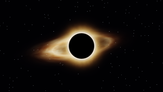
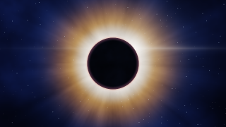
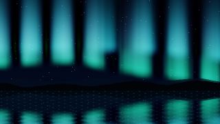
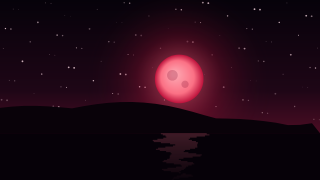
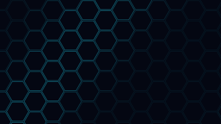
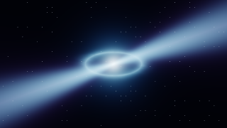

Modular X11 Desktop
Workspaces, Visual Alt+Tab & 40 Live Scenes
Built from scratch in C++20 on libxcb and libdbus-1 with 4 EWMH virtual workspaces (sticky windows & per-workspace focus memory),
a centered glassmorphism Alt+Tab switcher, numbered panel workspace pills with occupied/urgent indicators, native lunar-notify D-Bus toasts
& Notification Center, 40 upgraded WebGL & HiDPI live wallpapers, and the Lunar DE Connect Android companion.
Per-Instance VM Studio + Lunar Connect Simulator
Spawn multiple independent VM instances (+ New VM Instance). Switch each instance between
Engine A: Lunar DE Desktop VM (interactive live wallpapers, 6 layouts, frosted App Grid, Terminal skins, Testing tab & lunar-win tests)
or Engine B: Literal v86 WebAssembly x86 VM, driven live by the Android phone simulator.
V86 instance configuration. Click Boot x86 Instance
to load libv86 and boot an x86 image in WebAssembly (with automatic fallback notice if offline/CDN-restricted).
Everything Built in v1.0.25
40 upgraded WebGL & HiDPI live wallpapers, crash-free ARGB desktop drag compositing, 4 EWMH virtual workspaces, visual glass Alt+Tab switcher, and native D-Bus notifications.
4 EWMH Virtual Workspaces
Full _NET_NUMBER_OF_DESKTOPS, _NET_CURRENT_DESKTOP, _NET_DESKTOP_NAMES, and _NET_WM_DESKTOP (including 0xFFFFFFFF sticky windows) with per-workspace focus memory. Switch via Super+1..4, move via Super+Shift+1..4, or cycle with Super+Ctrl+Left/Right.
Glassmorphism Window Switcher
Hold Alt+Tab or Alt+Shift+Tab to open a centered 32-bit ARGB switcher displaying MRU windows on the current workspace with real 48 px app icons, live highlight, and instant focus+raise when releasing Alt.
Interactive Workspace Switcher Bar
Numbered 1–4 pills in lunar-panel display active highlight, occupied indicator dots, and urgent attention glow. Click any pill directly or scroll the mouse wheel over the workspace bar to cycle.
C++20 D-Bus Daemon & DND Drawer
Claims org.freedesktop.Notifications via libdbus-1, renders stacked glass toasts with icons & actions, and syncs to the slide-out Notification Center drawer with Do Not Disturb.
Phone Mirroring + AI Workspace Control
Android companion mirrors desktop alerts, dismisses remotely, streams 60 Hz UDP touchpad & opt-in screen view, and saves multiple PCs. MCP exposes switch_workspace and move_window_to_workspace.
XInput2 Automation + 40 Live Scenes
Per-device XI2 click grabs & virtual ClientPointer fix background game input in lunar-win, alongside 40 WebGL2/GLSL & HiDPI Canvas2D live wallpapers, 5-theme lunar-terminal, and isolated Xephyr sandbox.
Modular C++20 Architecture & Release Notes
Three lean native C++20 XCB daemons working in concert with a zero-overhead UNIX socket IPC bridge and optional Python/Compose companion services.
lunar-wm & lunar-panel
Reparenting EWMH window manager with 4 virtual workspaces, sticky windows, MRU visual Alt+Tab switcher, XInput2 grabs, and 6-layout MIT-SHM panel with Workspace Pills & Notification Center.
lunar-notify + UNIX Socket
Implements GetCapabilities, Notify, CloseNotification, GetServerInformation, and D-Bus signals; keeps a 50-item ring buffer synced live over $XDG_RUNTIME_DIR/lunar-notify.sock.
lunar-connect, MCP & Android
Bridges lunar-notify.sock, in-process libXtst UDP mouse input, RandR JPEG screen capture, lunar-win, and MCP workspace/window tools over LAN or Tailscale mesh.
| Version | Highlights |
|---|---|
| v1.0.25 | Upgraded all 32 existing live wallpapers and added 8 new scenes (40 total): GPU-accelerated WebGL GLSL shaders (Gargantua Event Horizon, Plasma Chromatic Vortex, Lunar Eclipse, Aurora Borealis, Ocean Caustics), HiDPI devicePixelRatio scaling, additive bloom Canvas2D layers, and WebKit2 hardware acceleration. |
| v1.0.24 | Fixed picom win_bind_mask crash during desktop rubberband drag on 32-bit ARGB overlays, fixed lunar-desktop-overlay Z-order stacking above all multi-monitor live wallpaper windows, and added fcntl.flock daemon locking + orphan cleanup in lunar-live-wallpaper. |
| v1.0.23 | 4 EWMH virtual workspaces (_NET_DESKTOP_NAMES, sticky 0xFFFFFFFF, per-workspace focus memory, Super+1..4, Super+Shift+1..4, Super+Ctrl+Left/Right), numbered lunar-panel workspace pills (occupied/urgent dots + wheel scroll), visual ARGB glass Alt+Tab / Alt+Shift+Tab switcher, and MCP switch_workspace / move_window_to_workspace. |
| v1.0.22 | Native C++20 lunar-notify D-Bus daemon, stacked ARGB glass toasts, lunar-panel Bell badge & slide-out Notification Center with Do Not Disturb, Android notification mirroring + remote dismiss, and multi-PC Saved Connections. |
| v1.0.21 | XInput2 per-device WM grabs & lunar-win virtual ClientPointer fixes for SDL2/GLFW/Unity/Wine games, zero-lag 60 Hz UDP mouse input over LAN & Tailscale, and opt-in on-demand Desktop Screen Viewer (0 B when off). |
40 Live Wallpapers + 48 Lossless 2K Backgrounds
Select directly from Appearance, Quick Live Picker, or lunar-live-wallpaper start <id>. Click any preview below to load it in the VM above.









Lunar DE Connect (Desktop Daemon + Kotlin Compose Android App)
Built on LAN UDP discovery + automatic Tailscale & Remote HTTPS failover with Saved Connections, 60 Hz UDP touchpad, opt-in Desktop Screen Viewer, live lunar-notify notification mirroring, and lunar-win background window routing.
Saved PCs & Tailscale Failover
Pair once via PIN or multi-endpoint lunar-connect:// QR URI and save multiple PCs with nicknames & tokens for 1-tap connect/switch across LAN, Tailscale IP, MagicDNS, and Remote HTTPS.
Notification Mirroring & DND
Dedicated Alerts tab mirrors desktop notifications from lunar-notify via /notifications, lets you dismiss individual alerts or Clear All on your PC, and toggles desktop Do Not Disturb remotely.
60 Hz UDP Mouse & Opt-In Screen
Ultra-low-latency UDP touchpad + scroll, MPRIS media & clipboard sync, opt-in multi-monitor Desktop Screen Viewer (0 B when off, 1-shot snapshots, tap-to-click), and background lunar-win input.
Install & Upgrade on Ubuntu / Debian
Single-command APT installation with automatic updates enabled.
curl -fsSL https://lunar-entertainment.github.io/Lunar_DE/install.sh | sudo bash # Launch the isolated Testing Sandbox anytime: lunar-settings --page testing # Launch the skinned terminal or Android Connect daemon: lunar-terminal & lunar-connect start
Essential Shortcuts & Command Palette
| Shortcut / Trigger | Action |
|---|---|
| Super + 1–4 | Switch Virtual Workspace (or scroll mouse wheel on panel workspace pills) |
| Super + Shift + 1–4 | Move Focused Window to Workspace 1–4 |
| Super + Ctrl + Left / Right | Cycle Previous / Next Virtual Workspace |
| Alt + Tab / Alt + Shift + Tab | Visual Glassmorphism Window Switcher Overlay |
| Alt + F2 | Command Palette (test, whatsnew, connect, term, livewpgrid, shot, rec) |
| Super | Full-Screen Frosted App Menu (toggleable in Settings) |
| Super + Shift + G | Toggle Gemini Live Voice + Screen Vision |
| Super + Return | Open Custom Skinned Lunar Terminal |
| Super + Left / Right | Aero Snap window half-screen |